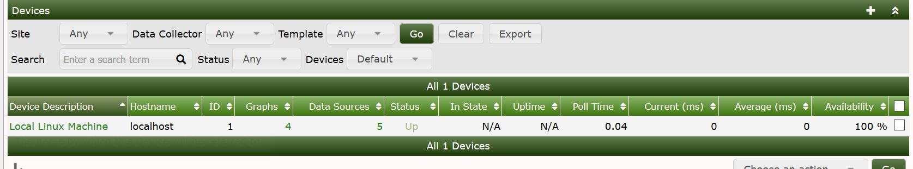
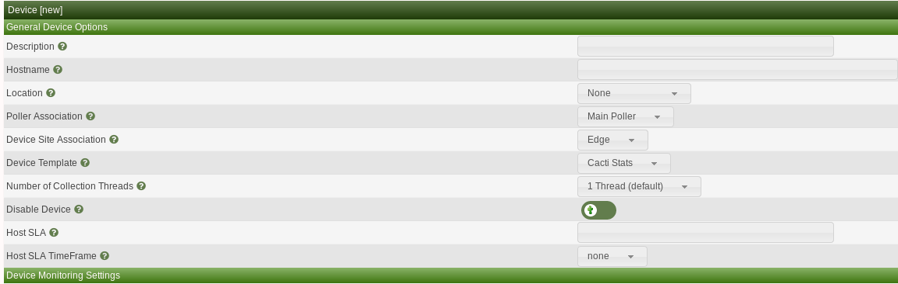

This section will describe Device management in Cacti.
Adding a device to Cacti can be done in a few differnt ways either via the GUI,Automation,CLI
To add a device via the gui first click on Console >> Managment >> Devices and you will see the below device console window which will show exisiting devices if any

You will now select the + on the top right hand corner
Once you select the + otherwise known as the add device button you will see the below screen which will ask you for device specific information
Some of the most important information about the device will be required in this window which includes

Cacti requires this basic information to be able to monitor the device and once entered, click save on the bottom right corner. With the device created you will need to add graphs for the device by clicking Create graphs for this device on the top right hand corner.
You can also create device by using the cli script located at /cactidir/cli/
usage: add_device.php --description=[description] --ip=[IP] --template=[ID] [--notes="[]"] [--disable]
[--poller=[id]] [--site=[id] [--external-id=[S]] [--proxy] [--threads=[1]
[--avail=[ping]] --ping_method=[icmp] --ping_port=[N/A, 1-65534] --ping_timeout=[N] --ping_retries=[2]
[--version=[0|1|2|3]] [--community=] [--port=161] [--timeout=500]
[--username= --password=] [--authproto=] [--privpass= --privproto=] [--context=] [--engineid=]
[--quiet]
Required:
--description the name that will be displayed by Cacti in the graphs
--ip self explanatory (can also be a FQDN)
To add a device using the bare minimum information would look something like this
$ php add_device.php --description=test --ip=192.168.1.15
Adding test (192.168.1.15) as "Cacti Stats" using SNMP v3 with community "public"
Success - new device-id: (45)
Copyright (c) 2004-2020 The Cacti Group